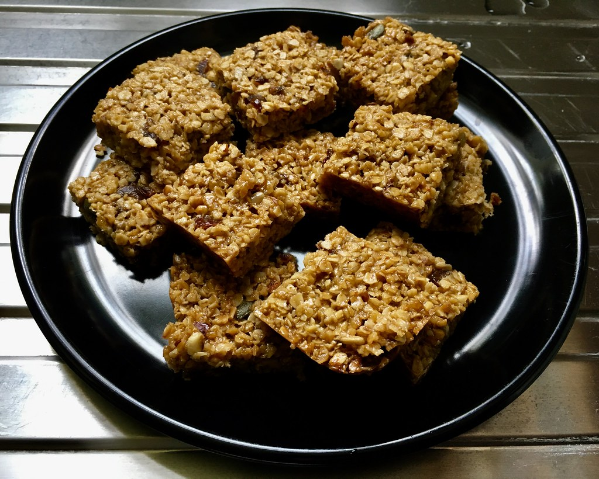

Flapjack

Ingredients:
- 500g oats
- 300g golden syrup
- 200g butter, plus extra for greasing the baking tin
- Any dried fruit or chocolate chips you want to put in the flapjack
Steps:
- Preheat oven to 160 degrees C. Grease and line baking tin.
- Heat the butter and syrup in a saucepan, stirring until melted.
- Once the butter has melted, remove pan from the heat and mix in the oats and dried fruit/chocolate chips.
- Add the mixture to the tin and bake for 40-50 minutes or until golden brown.